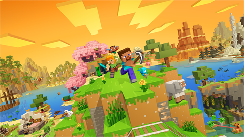
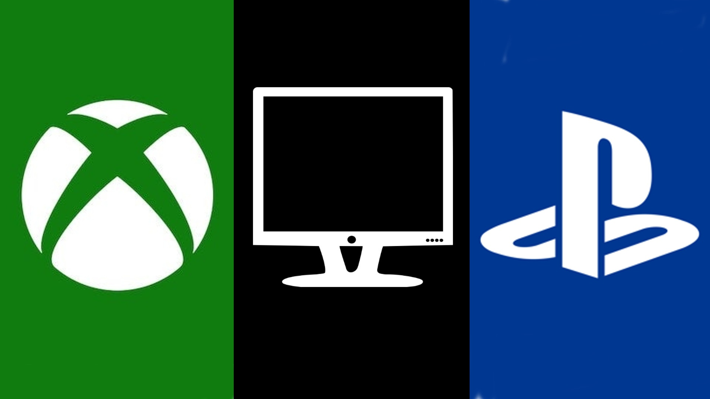

Faça seu login
Oque é o jogo
Minecraft é um jogo que dispõe de vários modos, como o survival, o criativo e o online. Independentemente do objetivo, no game, você deve usar blocos de madeira, terra e pedra para construir casas, edifícios e afins.
Há diversas skins no jogo.
Minecraft permite mudar e criar as skins de seus personagens de dois jeitos: por meio da compra de pacotes oficiais na loja e ao baixar skins criadas por fãs para a versão PC. Também há o Story Mode, que funciona como um jogo com história, que tem duas temporadas com cinco episódio.
Veja aqui a Season 1 e a Season 2. O app ainda possui a Pocket Edition (também chamado de Minecraft PE) para baixar no Android e iPhone (iOS). Atualmente, a edição Pocket é a mesma "Bedrock Edition" dos consoles e Windows 10. Quem deseja experimentar o título antes de comprar pode jogar sua versão Trial de testes pelo navegador por meio do now.gg, serviço de streaming de games na nuvem.

Informaçoes de Software
O Minecraft está disponível em duas versões, java e bedrock a versão java só
é utilizada no computador, já bedrock nas outras plataformas e ela possui algumas diferenças da bedrock (Á maioria sao apenas interfaces diferentes).
Dispositivos para Jogar Minecraft
| Plataforma |
Playstation |
Bedrock |
| Plataforma |
Xbox |
Bedrock |
| Plataforma |
Android e IOS |
Bedrock |
| Plataforma |
Computador |
Java |

Minecraft Education
O Minecraft Education Edition é uma versão do famoso jogo de construção da Microsoft feita para professores e alunos.
Lançado no final de 2016, o título está disponível para download no PC e em celulares Android e iPhone (iOS), e tem uma versão de testes grátis para baixar no Brasil.
A versão educacional do game busca deixar as aulas mais interativas, e traz uma proposta similar a do original, com os jogadores podendo explorar um mundo feito de blocos e descobrindo novas receitas de itens. A seguir, veja como o Minecraft Education Edition funciona, como jogar e instalar o game em português.


Aviso - Este link irá redioreciona-lo para um site fora desta plataforma